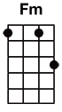
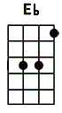
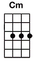

#19 Tieduprightnow






(Intro)
[Eb]
[Fm] [Bb] [Cm] [Eb]
[Fm] [Bb] [Cm] [Eb]
(Verse 1)
[Fm]As I look out you're [Bb]warning [Cm]me [Eb]
[Fm]Your thoughts devour my [Bb]point of [Cm]view [Eb]
(Give you up now)
[Fm]It's true I cower when I [Bb]will [Cm]speak [Eb]
So let's get round to [Fm]why....
(Pre-Chorus)
I will be the [Bb]first in [Gm]line to [Eb]open up
So I don't [Fm]mind to [Bb]give you up
(Chorus)
So let's get round to [Fm]why
The one I need is [Bb]tied up right [Cm]now [Eb]
So let's just wait a [Fm]while
The one I need is [Bb]tied up right [Cm]now [Eb]
So let's not draw the [Fm]line
Cause I can't make my [Bb]mind up right [Cm]now [Eb]
So let's just wait a [Fm]while
The one I need is [Bb]tied up right
(Interlude)
[Fm] [Gm] [Cm] [Eb]
[Fm] [Gm] [Cm] [Eb]
(Pre-Chorus)
[Fm]I will be [Bb]the first in [Gm]line to [Eb]open up so I don't mind
[Fm]I will be [Bb]the first in [Gm]line to [Eb]open up
So I don't [Fm]mind to [Bb]give you up
(Chorus)
So let's get round to [Fm]why
The one I need is [Bb]tied up right [Cm]now [Eb]
So let's just wait a [Fm]while
The one I need is [Bb]tied up right [Cm]now [Eb]
So let's not draw the [Fm]line
Cause I can't make my [Bb]mind up right [Cm]now [Eb]
So let's just wait a [Fm]while
The one I need is [Bb]tied up right
(Verse 2)
[Fm]It's unintended but [Bb]all in [Cm]vein [Eb]
[Fm]It's what I found on my [Bb]side [Cm] [Eb]
[Fm]You knew I'd pass through it's [Bb]all the [Cm]same [Eb]
So let's get down to [Fm]why... [Bb]
(Interlude)
[Fm] [Bb] [Cm] [Eb]
[Fm] [Bb] [Cm] [Eb]
(Chorus)
[Fm]The one I need is [Bb]tied up right [Cm]now [Eb]
So let's just wait a [Fm]while
The one I need is [Bb]tied up, right [N.C.]